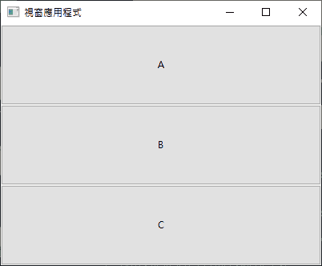
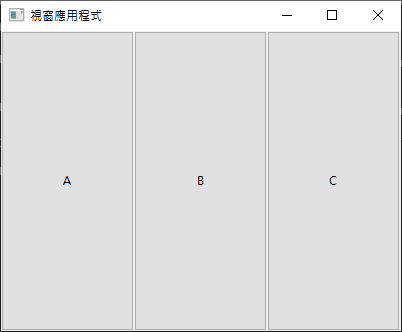
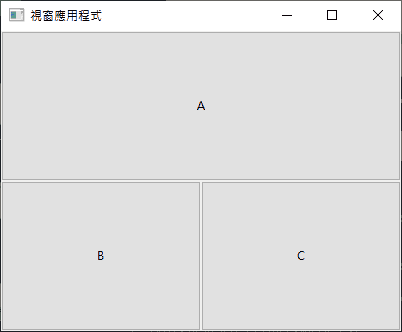
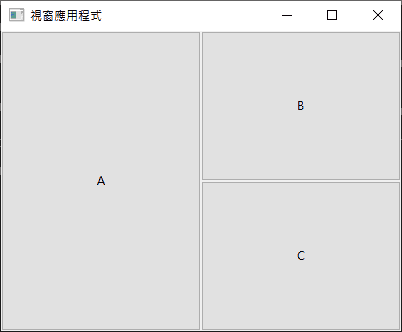
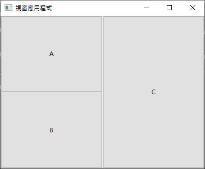

直覺地使用參數
一個比較直覺的用法，是 hexpand 和 vexpand 設為 1，halign 和 valign 設為 uiAlignFill，讓 Gird 自動將元件的大小調整為填滿占用的格子，這樣等於對著視窗畫滿格子就好，left、top、xspan、yspan 設定起來比較容易掌握～
比如由上往下畫三個格子，那 left 都 0，只需將 top 從 0 排到 2：
uiGridAppend(grid, uiControl(a), 0, 0, 1, 1, 1, uiAlignFill, 1, uiAlignFill);
uiGridAppend(grid, uiControl(b), 0, 1, 1, 1, 1, uiAlignFill, 1, uiAlignFill);
uiGridAppend(grid, uiControl(c), 0, 2, 1, 1, 1, uiAlignFill, 1, uiAlignFill);

由左到右畫三個格子的話，那就 top 都 0，只需將 left 從 0 排到 2：
uiGridAppend(grid, uiControl(a), 0, 0, 1, 1, 1, uiAlignFill, 1, uiAlignFill);
uiGridAppend(grid, uiControl(b), 1, 0, 1, 1, 1, uiAlignFill, 1, uiAlignFill);
uiGridAppend(grid, uiControl(c), 2, 0, 1, 1, 1, uiAlignFill, 1, uiAlignFill);

上面一格、下面二格，那就是：
按鈕 a 放在 [左 0 上 0] 的位置，占用水平空間 2 格。
按鈕 b 放在 [左 0 上 1] 的位置。
按鈕 c 放在 [左 1 上 1] 的位置。
uiGridAppend(grid, uiControl(a), 0, 0, 2, 1, 1, uiAlignFill, 1, uiAlignFill);
uiGridAppend(grid, uiControl(b), 0, 1, 1, 1, 1, uiAlignFill, 1, uiAlignFill);
uiGridAppend(grid, uiControl(c), 1, 1, 1, 1, 1, uiAlignFill, 1, uiAlignFill);

左邊一格、右邊二格，那就是：
按鈕 a 放在 [左 0 上 0] 的位置，占用垂直空間 2 格。
按鈕 b 放在 [左 1 上 0] 的位置。
按鈕 c 放在 [左 1 上 1] 的位置。
uiGridAppend(grid, uiControl(a), 0, 0, 1, 2, 1, uiAlignFill, 1, uiAlignFill);
uiGridAppend(grid, uiControl(b), 1, 0, 1, 1, 1, uiAlignFill, 1, uiAlignFill);
uiGridAppend(grid, uiControl(c), 1, 1, 1, 1, 1, uiAlignFill, 1, uiAlignFill);

左邊兩格、右邊一格，那就是：
按鈕 a 放在 [左 0 上 0] 的位置。
按鈕 b 放在 [左 0 上 1] 的位置。
按鈕 c 放在 [左 1 上 0] 的位置，占用垂直空間 2 格。
uiGridAppend(grid, uiControl(a), 0, 0, 1, 1, 1, uiAlignFill, 1, uiAlignFill);
uiGridAppend(grid, uiControl(b), 0, 1, 1, 1, 1, uiAlignFill, 1, uiAlignFill);
uiGridAppend(grid, uiControl(c), 1, 0, 1, 2, 1, uiAlignFill, 1, uiAlignFill);

由此可見，填滿的話，就像這樣直覺許多！遇到複雜的佈局，就先把同組的元件佈局到 Box，再以這種方式把各個 Box 填滿到 Grid 裡即可。
但是想留白的話，這全部填滿的方式反而複雜！視情況將 uiAlignFill 改為 uiAlignStart，從頭開始排列元件，沒排滿的空間自然就留白，說不定就是你想要的了。真不行再用這種全填滿的方式多占幾格去留白～